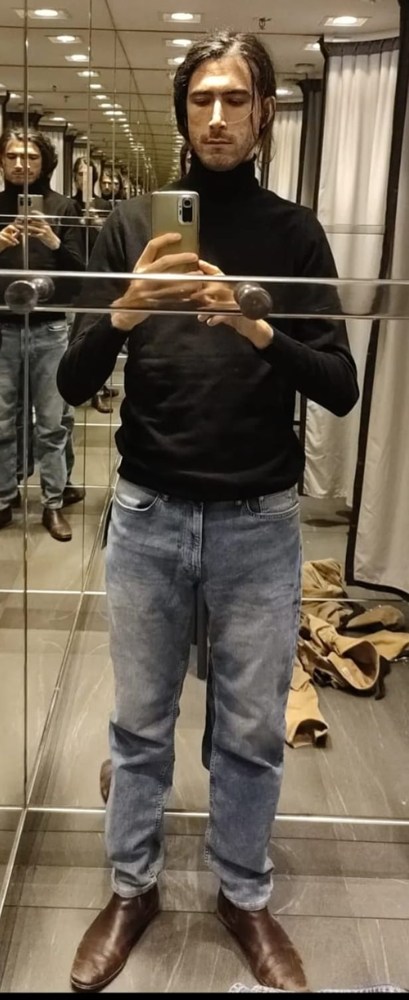

STOLEN MUSIC at IRCAM
The first presentation of Stolen Music, at 3537, Paris
Stolen Music was originally conceived for my final project as part of the IRCAM Cursus, and presented in 3537 in Paris on 16th September 2022, but my interest in stealing material (often in morally dubious ways) goes back to at least 2012, with my pieces Tweet Piece #2 and CrowdScoreSing.
This project owes a huge debt to Claudia Jane Scroccaro, who was my main supervisor, as well as the whole pedagogy department at IRCAM, particularly Pierre Jodlowski, Sebastién Naves and Jean Lochard - who all directly contributed to this project in important ways.
The basic aim of the project is to explore two main ideas that matter to me:
- Examining the boundaries of a "piece" of music: questioning the idea of the sole author and finding ways to subvert the linear, sectional timeline of a typical musical performance (for example by creating transitions that merge multiple pieces by different composers in a way that introduces doubt about the start/end points and both foreshadows future material and references past events.
- Presenting an argument that all musical material should be fair game for all people to work with, regardless of who owns it under current copyright law.
My contribution to this concert unfolded in and around the other pieces in the concert, which were by Julie Zhu, Aida Shirazi (in close collaboration with the dance artist Stefanie Inhelder), Qingqing Teng, and Filippos Sakagian. In this case, their material was taken and used with their blessing and they were consulted about my plans for it - however, this was done mainly because we are all friends and it wouldn't have been right to misuse their material in a concert which was of such importance to all of us. They are also all due a big thank you for their generosity in agreeing to let me work with their music in this context! In general, I have no qualms about going against the wishes of other composers (and I expect others to feel free to treat me in the same way).
PRE-CONCERT: FREED SOUNDS INSTRUMENT
As the audience entered the concert space, they were given an envelope with mysterious contents...

They were also given a small card inserted into the programme notes which contained a QR code linking to this webpage:
Freed Sounds Instrument
and including one or two small event pieces from a set of 32 (linked here).
The audience were given the option of using this webpage while they waited for the concert to begin, and eventually it was shut off remotely right before the concert started properly.

If you wish to reproduce the effect of this part of the concert, I would play this soundfile: event sounds and then go on the Freed Sounds Instrument page in another tab and begin improvising with it.
Technology used in this section:
JavaScript, FreeSound API, printed materials
FIRST PIECE: BOX, by Julie Zhu
This piece involved a percussionist (Olivia Martin) hidden inside a large wooden box, painted black and placed in the centre of the room. The percussionist made sounds using some percussion instruments (esp. bass drum, thundersheet) that were with her inside this claustrophic space, as well as drawing on the inside surfaces of the box. The contents of the box, as well as its surfaces, were amplified and spatialised across 12 loudspeakers (and two transducers attached to the thundersheet) in the room. The effect was to place the audience partly imagining being inside the box, and partly distorting the reality of the space inside and outside the box.
Julie and the team decided to have the percussionist begin making sounds before the concert, while the Freed Sounds Improvisations were still going on, meaning that we had already weakened the clear boundaries around each piece by the time the concert began.
TRANSITION: Doors Into Worlds
part one:
This video was projected on all four sides of the box used in Julie's piece. During the video, the percussionist opened the (previously invisible) door of the box and left it. The sonic material used is an array of YouTube videos of ASMR pen scratching (as I couldn't use material that was *really* from Julie's piece because all her material was processed live). The video part (obviously) is a bunch of clips of doors, mainly from famous films and TV shows. An additional element in the video is a Coke can, which was originally going to be a larger part of the project overall but even with its reduced role it makes sense to use such an iconic trademark. It also foreshadows a red colour palette for later on the concert.
Because the box needed to move out of the centre of the room to allow space for the remaining pieces in the concert, I prepared a second video, which was projected onto the wall. This change happened seamlessly and once the audience's gaze had shifted, the production team began the process of safely moving this large box (which was on a platform with wheels) to the side of the hall, parting the audience as they went. This clip was designed to hold space, and it uses a looped clip of a scene from the film Les convoyeurs attendent, with the contents behind a door chroma-keyed out and with all kinds of footage washily displayed behind it. When the production team had moved the box, the video fades down regardless of where in the video it is.
part two:
Technology used in this section:
MUBU library for Max (for automated audio segmentation w/ onset-detection; and for real-time concatenative synthesis), Reaper DAW with various reverb settings: the audio part was made from loading in files, auto-segmenting them and then improvising with them laid out on a graph according to audio descriptors. The resulting tracks were then layered in Reaper and processed through different reverbs, aiming to achieve different spaces every time a door opened. The video is entirely fixed media and made in DaVinci Resolve, using the Fusion part of the software for chroma-keying some of the doors.
SECOND PIECE: Né entre corps, by Aida Shirazi
with choreography by Stefanie Inhelder
The beautiful central visual idea of this piece was to place the choreographer behind a canvas screen and throwing her silhouette on the screen with lighting from behind. The simple idea became way more than the sum of its parts by combining the shadows thrown from multiple light sources to abstract the body of the dancer (who was otherwise augmented only by some hair extensions). Inhelder was often a purely geometric shape, but always hinting at her human body before eventually collapsing into a much more realistic silhouette towards the en of the piece.
Shirazi's sound emerged from an exploration of a bilingual text (Persian/French, the poem of the title) which is only ever heard in fragments or cast through heavy processing.
The combined movement and sound is very abstracted (especially to somebody who has limited French and no Persian), but the effect carries the weight of the text across and there's a heavy intensity to the piece
At the end of this piece, the silent opening of the next transition appeared immediately on the closest projection screen to this piece's position in the room.
TRANSITION: Shadow Puppets
Looking for a visual link that could lighten the atmosphere without parodying or attacking Aida and Stefanie's work, I hit on the idea of using shadow puppets. I found a set of whimsical videos online and realised I could build a weird interspecies love story out of them, and also take advantage of their colouring to play some more tricks with transparency (e.g. hiding different images in the light and shadow portions of a rabbit).
A big preoccupation for me while working on these sections was that the tone of the pieces around my transitions was mostly dark, serious and intense. I wanted to try and find a way to freshen the audience up so that they were ready for another intense piece, without seeming to make fun of any of the pieces. It's a fun challenge to try and make short, playful work that still has a kind of weight or beauty of its own (whether I succeeded or not is up to others to say!)
So the video here is predominantly shadow puppets, with some more "random" material creeping in which mostly foreshadows later sections. The audio is entirely derived from Aida's piece: she sent me the full audio stems (each of her sounds separately) of her piece and I was able to batch process them and use them in a kind of rudimentary musical instrument to create some improvisations. I created the video first and tried to create long tumbling whispers tied to the gestures in the video.
The piece was projected on the wall, and at the end of the transition, a separate projection of red fog came up on another screen and revealed the position of the performer for the next piece, which starts immediately. The red fog is designed to loop and then fade down when ready.
Technology used in this section:
Similar to the Doors transition, MUBU library for Max (for automated audio segmentation w/ onset-detection; and for real-time concatenative synthesis), Reaper DAW with various reverb settings: the audio part was made from loading in files, auto-segmenting them and then improvising with them laid out on a graph according to audio descriptors. The resulting tracks were then layered in Reaper and processed through different reverbs, aiming to achieve different spaces every time a door opened. The video is entirely fixed media and made in DaVinci Resolve, using the Fusion part of the software for the fancy chroma-key effects.
THIRD PIECE: Ghost shouting, Ghost screaming, by Qingqing Teng
This piece is for singer with a really crazy constrictive costume, sort of reminiscent of a snake. Qingqing has an amazing way of making super intense, loud, aggressive and bracing sounds - she says herself that she tries to create music with an energy that seems to flow naturally from within, and in this case it's definitely true, with the energy being ferocious and uncapped.
There's a video part which uses red bands of colour as an alternative to stage lighting, but which also turns into a large number of different abstract geometric motifs, as well as more connoted material that reflects the material explored in the piece.
The title is a literal translation of "Gui han, Gui jiao", which is an expression from Qingqing's hometown, which means something like a cry of indifference to a strange phenomenon (although I'm not sure I've done a good job of paraphrasing Qingqing's French text here). The singer represents Qingqing, a person swimming along in the ocean, unable to escape: it's one of those pieces that tumbles around in a complicated inner life.
The final sound of Qingqing's piece is this amazing jackhammerish pulse, and I used that as the start of my next transition.
TRANSITION: 3D-WORLD
This next section is where I took over the concert for a while and stopped making small transitions between other people's work. I knew that it made sense for Filippos' piece to go last, which meant there were really only three spots for me in the programme. While it might have been more radical or cohesive for me to deal ONLY in the interstitial moments of the concert, there weren't really enough of them to allow me to make a full statement. So I began to think about other material I could steal, and my mind went back to YouTube (I had some previous unfinished work which made use of masses of YouTube clips). As prep for the project, I downloaded my entire YouTube history and extracted a bunch of 5-second clips from all the videos, which served as part of my new material. Needless to say, none of this stuff has been taken with permission.
The effect is supposed to be an overwhelming media-saturation, with content flowing by too quickly to grasp even a significant amount of the meaning, and our brains flit between picking up on patterns of colour, movement or sound, and grabbing on to salient moments in the mess. Of course there's an obvious parallel with the way we all live our digital lives (is this really THAT much more intense than Instagram??), but by placing thousands of different copyrighted videos in this context the relevance of the specific content becomes virtually nil (a point previously made in related work Peter Ablinger, among many others; although the most direct point of comparison I can think is the TV series Chuck.
Technically, the video for this section was extremely demanding and took most of the summer to work out - described below for nerds... It's the work I am proudest of from that perspective.
The audio here is derived exclusively from the video clips used, which means there is a great degree of chance in the initial sound, and a very slow (quite sculptural) mixing process to try and coax the interesting sound out of the texture.
TRANSITION: TIK-TOK KAZOO LESSONS
(See the previous video c. 1:40 for this section.)
For reasons that will become clear later, the real point of my piece was to get the whole audience playing kazoos along with me, so naturally I needed to teach everybody how to play this.
Subverting the formality of a new music context is always fun, but there's an interesting serious point in using videos generated with TikTok in the context of IRCAM. The building is a kind of mecca for people interested in making music with technology. In the early days, one of the important things about IRCAM was that it had a supercomputer: the relevance of that to most computer musicians has eroded, and centres all over the world are technologically equal or superior by now. And in fact, the laptops most normal people work on have been capable enough to create innovative computer music for a decade or two. But still it has remained the domain of the expert who can afford to spend time (and often money) learning to use arcane software. Apps like TikTok, which offer sophisticated audio effects and video filters like movement tracking driven by deep-learning, for free and with an interface designed to be intuitive and immediate enough for children to use in a spare moment.
It's still probably unwieldy to make complex multimedia art exclusively in apps like TikTok (although I want to try this...), but the reality is that we are getting close to the point where this will be practical.
Anyway, that last clip is a one-minute crash course in kazoo playing told through TikTok videos (which are also available individually on my TikTok account @kazooteacher69
PRESENTATION: HOW TO PLAY IRISH FOLK MUSIC

Immediately after the TikTok videos ended, a light came up in front of the projection position, and I walked out channeling the spirit of Steve Jobs (although it might be more accurate to say I was Elizabeth Holmes 2.0).
My mission was to sell the audience the idea that, firstly, the kazoo was an Irish folk instrument, secondly, that the music we were about to play was an ancient Irish folk tune, and thirdly that we were going to play it using a revolutionary, AI-driven karaoke machine I had created during my studies at IRCAM.
Although it's a little unfair on IRCAM to associate them with Silicon Valley snake oil, given that they make serious research and don't draw unnecessary attention the deep learning components of much of the software they are working on, it's an interesting thing right now that AI has become such a buzzword.
During the course of making this I made use of an online "AI Logo Generator", which I heavily suspect was just combining different elements from a library at random (i.e. NOT AI). Because software sold or described as "artifical intelligence" is already doing incredible, scary things all the time, and because it is hard to understand how any of it works, the general public is unable to (a) tell where the limits of this kind of software are or will be and (b) unable to tell when they are being tricked into buying something useless. I can't find the reference, but I heard an interesting remark recently which was that to find out whether you are being sold an AI scam, you can replace the word "AI" with the word "magic"...and back away if the description still makes sense. For sure, my IRCAM presentation did not pass that test!
Of course, the reality was that my KARAOK.AI software (which you will see below) was just a fixed-media video put together in a video editing programme. But it would have been impossible to prove that in the concert hall, had anybody called me out!